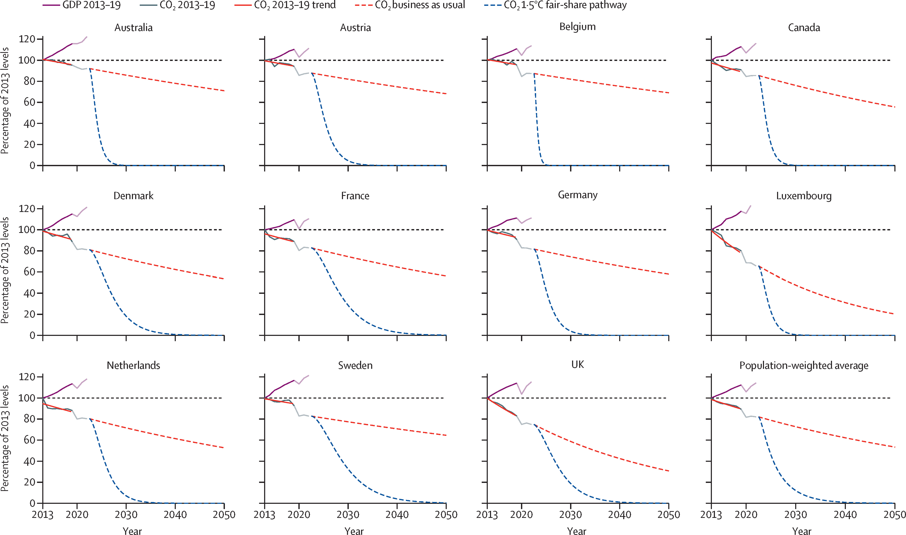

indicator
6032 EN.ATM.CO2E.PC
6048 EN.ATM.METH.PC
6059 EN.ATM.NOXE.PC
name
6032 CO2 emissions (metric tons per capita)
6048 Methane emissions (kt of CO2 equivalent per capita)
6059 Nitrous oxide emissions (metric tons of CO2 equivalent per capita)SOCS0078 - Macro-Economic Perspectives on Climate Change
Tobias Rüttenauer
2024-10-15
Last week
The Populsation Bomb and IPAT
`Malthusian trap’: Overpopulation & inevitable disaster
Paul Ehrlich’s The Population Bomb (1968)
\[\begin{equation*} I = P \times A \times T \end{equation*}\]
Climate & Population Dynamics
Socio-economic Pathways (SSP)
Socio-economic Pathways (SSP)
Macro-Economic Perspectives on Climate Change
“Green growth is already here”
In 2016, 70 countries — more than one in three worldwide — had a run of at least five years in which carbon emissions declined while GDP grew. Green growth is already here.
John Burn-Murdoch in the Financial Times (2022)
“Green growth is already here”
Macro-Economic Perspectives on Climate Change
- What are the driving forces that produce the environmental impacts and degradation?
- Focus on macro-explanations rather than individual behaviour.
Three broader perspectives:
Human Ecology (e.g. IPAT)
Ecological Modernization
Political Economy (e.g. Treadmill)
Macro-Economic Perspectives on Climate Change
- What are the driving forces that produce the environmental impacts and degradation?
- Focus on macro-explanations rather than individual behaviour.
Ecological Modernization
Environmental Kuznets Curve
Kuznets Curve
Original Kuznets Curve (Kuznets 1955) on the relation between economic growth and income inequality.
Increasing economic growth first increases, then decreases inequality
Industrialisation profits mainly the capitalists
Industrialisation pushes rural farmers into the city, reducing wages
Turning point: Democratisation & rise of welfare state
Environmental Kuznets Curve
Within a neoclassical tradition
Reformulation by Grossman and Krueger (1995) applying the KC to environmental issues.
The Environmental Kuznets Curve (EKC) explores the relationship between economic development and environmental quality.
What is the EKC?
Environmental Kuznets Curve
“The environmental Kuznets curve (EKC) is a hypothesized relationship between various indicators of environmental degradation and income per capita.
In the early stages of economic growth degradation and pollution increase, but beyond some level of income per capita, which will vary for different indicators, the trend reverses, so that at high income levels economic growth leads to environmental improvement.”
The Inverted U-Shape
- In the EKC, environmental impact is often depicted as an inverted U-shaped curve:
- Initial stage: Environmental degradation increases as economies grow.
- Turning point: At a certain income level, environmental degradation peaks.
- Later stage: Beyond the turning point, further economic growth leads to environmental improvement.
The Inverted U-Shape
Factors Influencing the EKC
Several factors influence the shape of the EKC:
- Scale Effect: Economic growth leads to increased resource use and pollution.
- Changes in Industry: Shifts from heavy industry to services can impact emissions.
- Changes in Input: Shifts towards more sustainable resources for production.
- Technological Change: Advancements can lead to cleaner production processes.
- Production efficiency: Using less input/resources.
- Emission efficiency: Same input producing less emissions.
The Inverted U-Shape
What Do You Think?
Your Answers
Early EKC Studies
- Grossman and Krueger (1995) estimated EKCs for SO2, dark matter, and heavy particles
- They used a cubic function of GDP per capita and found turning points at around $4,000–5,000.
- Selden and Song (1994) estimate the effect on dioxide, oxides of nitrogen, and carbon monoxide
- They confirm the inverted U-shaped relationship
- But turning points are much higher, at around $10,000
There are many more (David I. Stern 2004; David I. Stern 2017).
Early EKC Studies
Criticism
Methodological Challenges
- Heteroskedasticity and modeling of non-linearity are common challenges.
- David I. Stern (2004) noted that using data mainly from developed countries led to lower turning points.
- Problem of cointegration in panel data (time-series wander together): how to separate (potentially independent) time-trends in the data?
- Omitted variables bias: industrial trade, geographic region, urbanisation, …? (York, Rosa, and Dietz 2003)
Theoretical Challenges
- A fundamental assumption of the EKC model is that income is independent of environmental damage.
- There are likely differences between various pollutants.
- Externalisation and trade: Decrease of production in global north based on increase in global south.
- Environmental regulations in global north may negatively impact global south.
- Skewed distribution of income and wealth: increase concentrated among a small group.
Alternatives and Reformulations
Source: Dasgupta et al. (2002)
Let’s have a look at some data
World Development Indicators
The code below loads the WDI packages and searches for an indicator on CO2 per capita. It uses the statistics software R (more later).
The code below uses the WDI API to retrieve the data and creates a dataframe of three indicators.
# Define countries, indicators form above, and time period
wd.df <- WDI(country = "all",
indicator = c('population' = "SP.POP.TOTL",
'gdp_pc' = "NY.GDP.PCAP.KD",
'co2_pc' = "EN.ATM.CO2E.PC",
'nox_pc' = "EN.ATM.NOXE.PC",
'pm25_mean' = "EN.ATM.PM25.MC.M3",
'parliament_women_pt' = "SG.GEN.PARL.ZS",
'gini' = "SI.POV.GINI",
'fossil_fuel_pt' = "EG.USE.COMM.FO.ZS",
'taxes_total' = "IC.TAX.TOTL.CP.ZS"),
extra = TRUE,
start = 2000, end = 2019)
# Drop all country aggregates
wd.df <- wd.df[which(wd.df$region != "Aggregates"), ]
# Save data
save(wd.df, file = "WDI_short.RData")Empirical Test Using 2019 data
show code
Call:
lm(formula = log(co2_pc) ~ log(gdp_pc) + I(log(gdp_pc)^2), data = wd.df[wd.df$year ==
2019, ])
Residuals:
Min 1Q Median 3Q Max
-1.21519 -0.40234 -0.09141 0.33265 1.75904
Coefficients:
Estimate Std. Error t value Pr(>|t|)
(Intercept) -19.99727 1.54396 -12.952 < 2e-16 ***
log(gdp_pc) 3.96016 0.36116 10.965 < 2e-16 ***
I(log(gdp_pc)^2) -0.17695 0.02076 -8.525 5.89e-15 ***
---
Signif. codes: 0 '***' 0.001 '**' 0.01 '*' 0.05 '.' 0.1 ' ' 1
Residual standard error: 0.5776 on 181 degrees of freedom
(31 observations deleted due to missingness)
Multiple R-squared: 0.8339, Adjusted R-squared: 0.832
F-statistic: 454.3 on 2 and 181 DF, p-value: < 2.2e-16- Positive and highly significant linear term
- Negative and highly significant quadratic term
Really a “Curve”?
show code
# Calculate maximum (turning point)
b1 <- mod1.lm$coefficients["log(gdp_pc)"]
b2 <- mod1.lm$coefficients["I(log(gdp_pc)^2)"]
tp <- -b1 / (2 * b2)
# load package
library(ggplot2)
# Plot 2019 data
pl1 <- ggplot(wd.df[wd.df$year == 2019,],
aes(
x = gdp_pc,
y = co2_pc,
size = population,
color = region
)) +
geom_smooth(aes(group = 1), show.legend = "none") +
geom_point(alpha = 0.5) +
geom_vline(xintercept = exp(tp), linetype="dotted") +
annotate(geom="text", x = 10000, y = 0.1,
label = paste0("Turning point: ",
format(round(exp(tp), 0), big.mark = ","),
" USD")) +
theme_minimal() +
scale_y_log10() +
scale_x_log10(labels = scales::dollar_format()) +
labs(y = "CO2 emissions per capita (log-transformed)",
x = "GDP per capita (log-transformed)",
title = "Year: 2019")
pl1Maybe Over Time?
show code
# Load library
library(gganimate)
# Define a start and end year
st <- 2009
end <- 2019
wd_sub.df <- wd.df[which(wd.df$year >= st & wd.df$year <= end), ]
# duplicate 2019 data for each year
tmp.df <- wd_sub.df[wd_sub.df$year == 2019, ]
l <- nrow(tmp.df)
tmp.df <- tmp.df[rep(seq_len(nrow(tmp.df)),
each = length(unique(wd_sub.df$year))), ]
tmp.df$year <- rep(unique(wd_sub.df$year), times = l)
# Plot 2019 data
pl2 <- ggplot(wd_sub.df,
aes(
x = gdp_pc,
y = co2_pc,
)) +
geom_smooth(mappping = aes(group = year), data = tmp.df,
show.legend = "none", se = FALSE, alpha = 0.5) +
geom_point(aes(size = population,
color = region), alpha = 0.5) +
# geom_vline(xintercept = exp(tp), linetype="dotted") +
# annotate(geom="text", x = 10000, y = 0.1,
# label = paste0("Turning point: ",
# format(round(exp(tp), 0), big.mark = ","),
# " USD")) +
theme_minimal() +
scale_y_log10() +
scale_x_log10(labels = scales::dollar_format()) +
labs(y = "CO2 emissions per capita (log-transformed)",
x = "GDP per capita (log-transformed)") +
transition_time(year) +
labs(title = "Year: {frame_time}") +
shadow_wake(wake_length = 0.7, alpha = FALSE, wrap = FALSE)
pl2
Key Takeaways
- The EKC explores the relationship between economic growth and the environment.
- It suggests an inverted U-shaped curve, with a turning point of peak environmental degradation.
- Multiple factors, including scale, technology, and policy, influence the EKC.
- Evidence varies, and the EKC is based on a fragile foundation.
- Wrong conclusion: de-emphasize environmental policy and pursue growth instead.
- EKC is overly simplistic.
- Some optimism: There are downwards trends in emissions in several European countries.
Questions?
- Do you have any questions about the Environmental Kuznets Curve?
Is this debate about the Environmental Kuznets Curve an old hat?
Back to “Decoupling” and “Green Growth”
For the best part of the past 200 years, one rule held across the world: if a country’s economic activity expanded, so did its carbon emissions. But starting in the 1980s with the advent of nuclear power, it became increasingly common to see countries cutting emissions while growing GDP.
The pace of this decoupling has now accelerated as the shift from carbon-intensive manufacturing to services and from dirtier to relatively cleaner fossil fuels has been supercharged by proliferating cheap renewables.
John Burn-Murdoch in the Financial Times (2022)
Source: John Burn-Murdoch in the Financial Times (2022)
But Remember the Absolute Level
Over the past decade, some countries have reduced their CO2 emissions while increasing their gross domestic product (absolute decoupling). Politicians and media have hailed this as green growth.
The emission reductions that high-income countries achieved through absolute decoupling fall far short of Paris-compliant rates. At the achieved rates, these countries would on average take more than 220 years to reduce their emissions by 95%
But Remember the Absolute Level
High-income countries that have recently achieved absolute decoupling. Source: Vogel and Hickel (2023)
Still a Long Way
High-income countries that have recently achieved absolute decoupling. Source: Vogel and Hickel (2023)
What we would need
Source: Vogel and Hickel (2023)
Key Takeaways
- “Green growth” (as EKC) alone is not going to solve the problem.
- Continued economic growth within 1.5°C fair-shares seems empirically out of reach, even for the best-performing countries.
- Vogel and Hickel (2023) suggest post-growth approaches:
- reducing carbon-intensive and less-necessary production and consumption,
- shifting to low-carbon alternatives,
- abandoning the pursuit of aggregate economic growth.
How to achieve in high-income countries?
“Green growth is already here”
Treadmill of Production
Ecological Modernization
Treadmill of production
References
Arrow, Kenneth, Bert Bolin, Robert Costanza, Partha Dasgupta, Carl Folke, C. S. Holling, Bengt-Owe Jansson, et al. 1995. “Economic Growth, Carrying Capacity, and the Environment.” Science 268 (5210): 520–21. https://doi.org/10.1126/science.268.5210.520.
Dasgupta, Susmita, Benoit Laplante, Hua Wang, and David Wheeler. 2002. “Confronting the Environmental Kuznets Curve.” Journal of Economic Perspectives 16 (1): 147–68. https://doi.org/10.1257/0895330027157.
Grossman, G. M., and A. B. Krueger. 1995. “Economic Growth and the Environment.” The Quarterly Journal of Economics 110 (2): 353–77. https://doi.org/10.2307/2118443.
Kuznets, Simon. 1955. “Economic Growth and Income Inequality.” The American Economic Review 45 (1): 1–28.
Selden, Thomas M., and Daqing Song. 1994. “Environmental Quality and Development: Is There a Kuznets Curve for Air Pollution Emissions?” Journal of Environmental Economics and Management 27 (2): 147–62. https://doi.org/10.1006/jeem.1994.1031.
Stern, David I. 2004. “The Rise and Fall of the Environmental Kuznets Curve.” World Development 32 (8): 1419–39. https://doi.org/10.1016/j.worlddev.2004.03.004.
Stern, David I. 2017. “The Environmental Kuznets Curve After 25 Years.” Journal of Bioeconomics 19 (1): 7–28. https://doi.org/10.1007/s10818-017-9243-1.
Vogel, Jefim, and Jason Hickel. 2023. “Is Green Growth Happening? An Empirical Analysis of Achieved Versus Paris-compliant CO2 Decoupling in High-Income Countries.” The Lancet Planetary Health 7 (9): e759–69. https://doi.org/10.1016/S2542-5196(23)00174-2.
York, Richard, Eugene A. Rosa, and Thomas Dietz. 2003. “Footprints on the Earth: The Environmental Consequences of Modernity.” American Sociological Review 68 (2): 279–300. https://doi.org/10.2307/1519769.